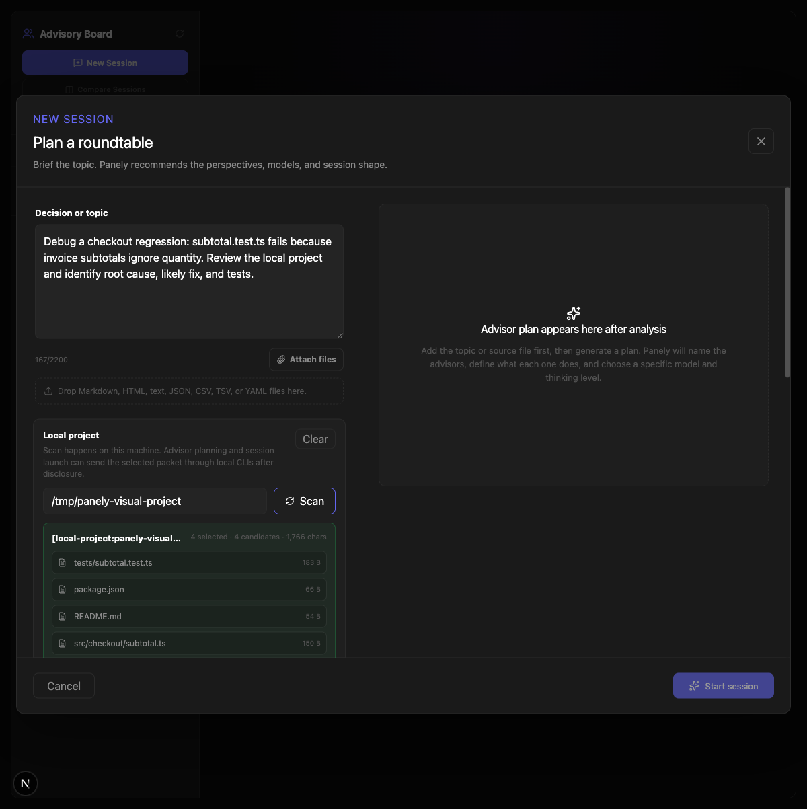
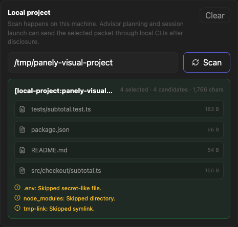
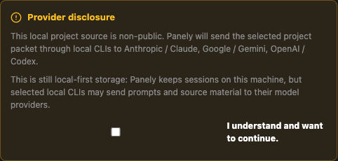
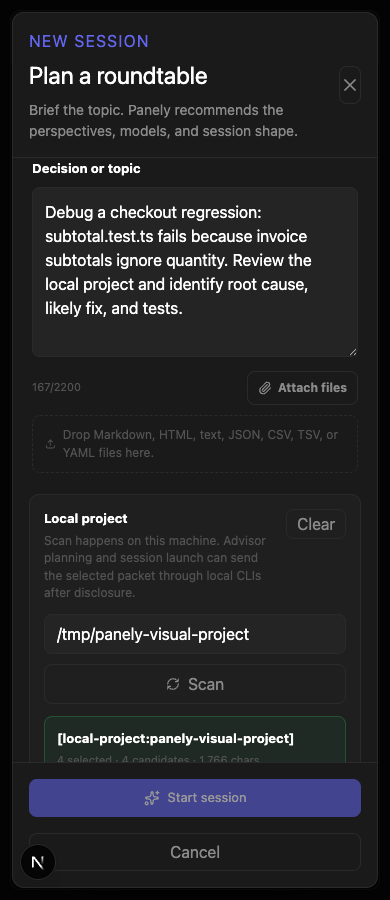

Plan: Panely Local Project Debug Board
Purpose
Build a Local Project Debug Board workflow for Panely and formalize the repeatable plan-review-build-review-release process as a reusable Codex skill. The product goal is to help developers bring a hard local codebase problem into Panely, have the app assemble a bounded source packet from relevant files, and run a multi-model advisory board that produces a diagnosis, fix strategy, and test plan.
Problem
Panely can already review pasted text and attached files, but a developer with a large local project still has to manually choose files and explain context. That breaks down for real bugs where the useful context is scattered across stack traces, package files, configs, tests, recent code, and likely suspect modules. Separately, the human delivery workflow we have used all day is valuable but not yet packaged as a reusable command.
Solution
Add an optional Local Project section to the launch wizard. The user enters a local project path and describes the bug or pain point. Panely scans the project locally, builds a source packet from relevant text files under the selected context budget, shows the files and warnings, and includes that packet in the advisory session reference context after provider disclosure is accepted. The planner receives a new debug intent and recommends debugger-specific board seats. In parallel, create a reusable Codex skill for the repeatable plan-review-build-review-release workflow.
Scope Boundaries
| In scope | Out of scope for this release |
|---|---|
| Local path input, scan, file selection, source packet preview, disclosure, debug intent, planner seats, session launch. | Autonomous code editing, test execution inside arbitrary repos, remote repository cloning, background job queues. |
| Conservative ignore rules for large/binary/generated directories and files. | Full gitignore parser parity, language-server indexing, semantic embeddings. |
| Reusable local Codex skill for planf3 plus adversarial review plus GitHub release flow. | Publishing the skill to a public marketplace. |
Relevant Files
Existing Files
- existing
src/components/advisory/LaunchWizard.tsx- launch modal, topic/file intake, disclosure, planning, and session creation. - existing
src/app/api/advisory/session-plan/route.ts- AI advisor planner and heuristic fallback. - existing
src/app/api/advisory/sessions/route.ts- session creation, provider disclosure, and reference context persistence. - existing
src/lib/advisory/source-packet.ts- source packet structure for formal board runs. - existing
src/lib/advisory/provider-disclosure.ts- sensitivity and provider disclosure language. - existing
src/types/advisory.ts- session and reference context types. - existing
src/styles/advisory.css- launch wizard styling. - existing
.github/workflows/release.yml,CHANGELOG.md,README.md- established GitHub release workflow.
New Files
- new
src/lib/advisory/project-context.ts- pure local project scanner, scoring, packet builder, limits, and warnings. - new
src/lib/advisory/project-context.test.ts- scanner and packet tests using temporary fixture projects. - new
src/app/api/advisory/project-context/route.ts- local-only API endpoint for project packet previews with same-origin/loopback protection. - new
src/app/api/advisory/project-context/route.test.ts- endpoint validation, anti-CSRF, same-origin, and disclosure regression tests. - new
~/.codex/skills/panely-ship-run/SKILL.md- reusable local workflow skill for this plan-review-build-review-release pattern. This is a local Codex capability, not a GitHub release artifact. - new
~/.codex/skills/panely-ship-run/agents/openai.yaml- UI metadata for invoking the local skill. - new
specs/panely-local-project-debug-board/- visual evidence screenshots for this run.
Implementation Phases
IMPORTANT: Execute every phase in order. Update this document before starting a phase, after completing a phase, and after review findings. Status markers: [] idle, [wip] in progress, [x] complete, [f] failed.
[x] Phase 0: Plan Review Gate
Create this plan, run adversarial review, and incorporate accepted feedback before code changes.
0.1 Plan Creation
[x]Create live HTML plan inspecs/panely-local-project-debug-board.html.[x]Include Local Project Debug Board product scope, repeatable workflow skill scope, testing, visual evidence, and release steps.[x]Open plan locally for user visibility.
0.2 Adversarial Plan Review
[x]Spawn adversarial reviewer focused on scope, privacy, local filesystem safety, context-budget correctness, UI complexity, testing gaps, and release risk.[x]Incorporate accepted review changes into this plan.[x]Mark Phase 0 complete only after review is clean or findings are resolved.
0.3 Testing Strategy
[x]rg -n "\\{\\{|\\}\\}" specs/panely-local-project-debug-board.html- proves no template tokens remain.
[x] Phase 1: Local Project Context Engine
Build the pure scanner and packet generator first so UI and API can stay thin.
1.1 Scanner and Limits
[x]Validate absolute local project paths and reject missing paths or non-directories with clear errors.[x]Reject dangerous roots and private stores:/, user home root,~/.codex,~/.ssh,~/.aws,~/.config,~/.gnupg, and similar credential directories.[x]Resolverealpath, do not follow symlinks, and require every selected file realpath to remain inside the selected project root.[x]Walk the project recursively with hard limits for depth, files, directories, bytes read, selected files, elapsed time, and warnings.[x]Implement concrete defaults:MAX_DEPTH=12,MAX_CANDIDATE_FILES=900,MAX_DIRS=260,MAX_BYTES_READ=1_200_000,MAX_SELECTED_FILES=24,MAX_SCAN_MS=2500, andMAX_WARNINGS=40.[x]Use conservative excludes:.git,node_modules,.next,dist,build, coverage, binary/media, large files, generated artifacts, and secrets-like env files.[x]Identify key project files such as README, package files, tsconfig, lockfiles, test configs, source files, and paths mentioned in stack traces or prompt text.[x]Score candidate files from prompt terms, path mentions, extension priority, and project metadata.
1.2 Packet Builder
[x]Build a bounded markdown source packet with a redacted project root label, scan summary, user pain point, selected file manifest, warnings, and selected file contents.[x]Use a budget allocator that preserves packet preamble, manifest, and warnings; truncate selected file contents last.[x]Preserve warnings and manifest even when file contents are truncated.[x]Do not include absolute project paths in model packets by default; show relative paths plus a redacted root label. Full local path stays in the local UI only unless the user explicitly opts in later.[x]Include enough metadata for the board to know this is local project material sent through selected CLIs after disclosure.
1.3 Testing Strategy
[x]npm test -- src/lib/advisory/project-context.test.ts- proves scanner, scoring, excludes, symlink containment, dangerous-root rejection, large-repo limits, budget behavior, and warning preservation.[x]Test invariant: returnedreferenceContext.length <= contextBudgetChars, while the manifest and warnings remain present after truncation.
[x] Phase 2: Project Context API
Expose the scanner as a local-only preview endpoint for the launch wizard.
2.1 API Route
[x]AddPOST /api/advisory/project-contextacceptingprojectPath,topic, andcontextBudgetChars.[x]Return selected files, skipped counts, warnings, packet character count, and reference context text.[x]Exportruntime = "nodejs"and keep the endpoint strictly server-side; do not send data to any model provider during scan.[x]Require an explicit request header for project scans, reject cross-site fetches withSec-Fetch-Site, verify origin/referer host matches the request host, and allow only loopback hosts.[x]AddsourceKinds: ["local-project"]orlocalProjectFileCountto provider disclosure helpers so local project material always requires consent for both planner and session creation.
2.2 Testing Strategy
[x]npm test -- src/app/api/advisory/project-context/route.test.ts src/lib/advisory/project-context.test.ts src/lib/advisory/provider-disclosure.test.ts src/app/api/advisory/sessions/route.test.ts- proves endpoint validation, anti-CSRF, packet response, and disclosure wiring.
[x] Phase 3: Debug Intent and Advisor Planning
Make debugging a first-class planning contract before the UI starts sending project packets to the planner.
3.1 Intent
[x]Adddebugintent heuristics for bug, error, stack trace, failing test, regression, TypeScript/build/lint failure, and broken behavior language.[x]Update planner JSON schema and fallback plan to supportdebug.[x]Preferformal-boardfor high-stakes debugging androundtablefor exploratory troubleshooting.
3.2 Debug Seats
[x]Add fallback seats such as Root Cause Analyst, Architecture Reviewer, Test/Regression Engineer, Patch Strategist, and Adversarial Reviewer.[x]Instruct planner to consider selected project files and produce roles that map to the bug, not static mascots.
3.3 Testing Strategy
[x]npm test -- src/app/api/advisory/session-plan/route.test.ts- proves debug intent fallback and disclosure behavior.
[x] Phase 4: Launch Wizard Project Intake
Add the user-facing project path workflow without making the setup feel crowded. Be explicit that scanning is local, but generating the advisor plan is a model call.
4.1 UI Controls
[x]Add a compact Local Project section below the topic box with path input, scan button, clear button, status, and selected-file summary.[x]Show selected files as readable chips/cards with path, size, score reason, and truncation state.[x]Show warnings for skipped directories, skipped large/binary files, and env/secrets files without exposing secret contents.[x]Make the UI clear that scan is local, while both advisor-plan generation and session launch may send selected source material through the chosen local CLIs after provider disclosure.
4.2 Launch Integration
[x]Include project packet text in planner inference and session reference context.[x]Reset disclosure acceptance when project path or packet changes.[x]Reset disclosure acceptance when selected models/providers or context budget changes.[x]Preserve existing attachment workflow and context budget behavior.
4.3 Testing Strategy
[x]npx tsc --noEmit- proves UI/API type integration.
[x] Phase 5: Debug Output Contract
Ensure the final board has a useful shape for developers.
5.1 Reference Context Framing
[x]Add a debug packet preamble asking the board to return root cause hypotheses, evidence, likely files, proposed fix strategy, and test plan.[x]Ensure generated sessions show redacted project label and selected file count in the start event/reference context.[x]Keep private source disclosure visible and honest.
5.2 Testing Strategy
[x]npm test -- src/lib/advisory/project-context.test.ts src/lib/advisory/decision-record.test.ts- proves packet shape and downstream output compatibility.
[x] Phase 6: Repeatable Delivery Workflow Skill
Create a local Codex skill so Tim can invoke this workflow with a short command later.
6.1 Skill Creation
[x]Initialize~/.codex/skills/panely-ship-runusing the official skill creator script.[x]Write a conciseSKILL.mdthat requires planf3 planning, adversarial plan review, live HTML status updates, visual evidence, implementation, adversarial code review, verification, and GitHub release workflow.[x]Include explicit user-confirmation gates before publishing actions such as commit, push, tag, or release when the user has not already authorized those actions in the current request.[x]Generateagents/openai.yamlmetadata.
6.2 Skill Validation
[x]python3 "$HOME/.codex/skills/.system/skill-creator/scripts/quick_validate.py" "$HOME/.codex/skills/panely-ship-run"- proves the skill is discoverable and valid.
[x] Phase 7: Visual Evidence
Capture screenshots that prove the new workflow is visible, usable, and not visually broken.
7.1 Screenshots
[x]Capture desktop launch wizard with Local Project section.[x]Capture scanned packet summary with selected files, warning states, and long relative paths.[x]Capture provider disclosure gate showing local-project source disclosure text.[x]Capture mobile/narrow viewport to verify text and controls do not overlap.[x]Embed screenshots in the Visual Evidence section below.
7.2 Testing Strategy
[x]npm run build- proves production rendering compiles.
[wip] Phase 8: Final Review, Commit, Push, Release
Run final gates, adversarial code review, commit, push, tag, and verify GitHub Release notes.
8.1 Review and Verification
[x]Run adversarial code review after implementation and before commit.[x]Run fullnpm run verify.[x]Run publish-safety and confirm only expected warnings remain.
8.2 GitHub Workflow
[x]Choose next semver and addCHANGELOG.mdrelease notes before commit.[]Stage only intended repo files and commit approved changes.[]Pushmaintotimharris707/panely.[]Confirm the release tag does not already exist, create an annotated tag on the pushed commit, and push the tag.[]Watch GitHub Actions release workflow and confirm release URL.
8.3 Testing Strategy
[]gh release view <tag> --repo timharris707/panely- proves release notes were published.
Validation Commands
[x]npm test -- src/lib/advisory/project-context.test.ts src/app/api/advisory/project-context/route.test.ts src/app/api/advisory/session-plan/route.test.ts src/lib/advisory/provider-disclosure.test.ts src/app/api/advisory/sessions/route.test.ts- validates scanner, endpoint, disclosure, and planner behavior.[x]npm run verify- full release candidate verification.[x]git diff --check- whitespace and patch hygiene.[x]python3 "$HOME/.codex/skills/.system/skill-creator/scripts/quick_validate.py" "$HOME/.codex/skills/panely-ship-run"- validates the new workflow skill.[x]Browser screenshots embedded below - visual evidence of desktop and mobile UI.
Questionables
Should Panely run project tests automatically?
Not in this release. Running arbitrary project commands is powerful but risky. This release only reads selected text files locally and produces an advisory context packet. Test-command discovery and explicit user-approved execution can come later.
Should the app parse full .gitignore rules?
Not initially. A conservative exclude list is safer and faster. Full gitignore parity is useful later but can create surprising omissions if not explained well.
Should local project paths be persisted?
For this release, only the redacted project label and relative paths may appear in persisted session data or model packets. The absolute path remains local UI state only unless a future explicit opt-in is built.
Visual Evidence
Screenshots are captured during Phase 7 and embedded here before release.
Captured after scanning the local fixture project. The wizard shows the Local Project scanner and selected packet summary.

Selected files use relative paths, while secret-like files, generated directories, and symlinks are reported as skipped.

Local project source is treated as non-public before advisor planning or session launch can send selected material through local CLIs.

Narrow viewport evidence: the project path input and Scan button stack without text overlap.

Notes
docs/ remain intentionally excluded from this commit because they contain developer-specific local path warnings; the committed release candidate does not include those files.
| Debug board seat | Purpose |
|---|---|
| Root Cause Analyst | Use stack traces, failing behavior, and selected files to identify likely cause and confidence. |
| Architecture Reviewer | Find design mismatch, state-flow, dependency, or boundary issues. |
| Test and Regression Engineer | Define reproduction, regression tests, and edge cases. |
| Patch Strategist | Propose the smallest coherent fix path and rollout order. |
| Adversarial Reviewer | Challenge weak hypotheses and prevent overconfident fixes. |
Amendments
2026-06-25T13:09:57-07:00 - Initial plan created
Created the initial Local Project Debug Board and repeatable workflow-skill plan from the user request.
2026-06-25T13:15:19-07:00 - Adversarial plan review incorporated
Accepted review findings on provider disclosure, filesystem safety, context-budget allocation, release ordering, visual evidence, local workflow-skill scope, and absolute path redaction.
2026-06-25T13:17:38-07:00 - Second review corrections incorporated
Removed the absolute-path persistence contradiction, added concrete scan limit defaults, and added the explicit reference-context budget invariant.